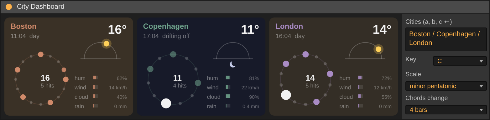
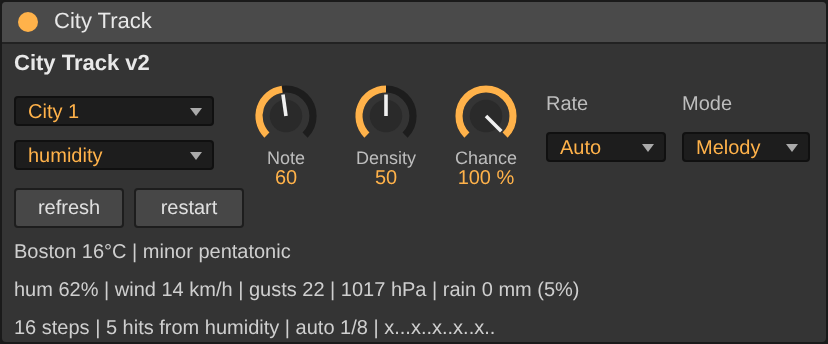

for Ableton Live
Two devices that play the live weather of three places as rhythm and melody. Quick start, then everything you can do with them.


Unzip it and keep it whole, with the .js files next to the two devices. Your User Library is a good home.
Drag City Dashboard onto any track. An empty audio track or the master is fine. It is where you choose the cities.
Make three MIDI tracks, each with an instrument. Drag City Track onto each, before the instrument. Set City to 1, 2 and 3.
Each track plays its city's weather. Turn Mode to Melody to hear the shared key and chords. The weather refreshes every 10 minutes.
YOU NEED Ableton Live 12 with Max for Live, and an internet connection. The weather comes from Open-Meteo.
TIP Once it works, use Freeze Device in each device's Max editor. The scripts then travel inside the device and you can move it anywhere.
Plays one city. Its temperature sets the length of a rhythm, and its weather decides which steps sound. Put one on each track.
The picture of all three cities, and the place where you choose them. Every City Track follows what you set here.
16°C is a 16-step pattern. Below zero it uses the number without the minus sign, and drops an octave.
Hits from picks humidity, wind, cloud or rain. It sets how many notes are spread across the steps. Density scales it.
The sun's arc goes out as mod wheel (CC1). CC74 carries brightness: the sun, and less when the city is asleep.
After sunset a city drifts off over two hours. More rests, softer notes, and half speed in deep sleep. It stirs before sunrise.
With Rate on Auto, settled high pressure plays in 1/8 notes. Otherwise 1/16.
The chance of rain thins the line, up to a third resting. Unsettled weather adds quick doubles and little runs.
MELODY MODE Each hit walks the shared scale and leans onto a chord progression that follows Live's song position. All three tracks play in the same key over the same chords. Calm air takes small steps, wind makes the line leap, and humid air repeats notes. The three cities also take turns being up front, a minute or two each.
ONE DASHBOARD
Anywhere in the set. It does not make sound.
THREE CITY TRACKS
One per MIDI track, before the instrument. Pick City 1, 2 and 3.
YOUR SOUNDS
Sounds, reverb, delay and recording are your own instruments, effects and Live.
Set Mode to Melody, Rate to 1/2 or 1 bar, and Note low, around 48. Put it on a soft pad and lower Density.
Melody mode, Rate 1/16, Note 60 or higher. A high line leans onto the chord more often. Bring Chance down for gaps.
Use Rhythm mode into a Drum Rack. It plays one note, the weather's rhythm. On a default rack, Note 36, 38 and 42 are kick, snare and hat.
The sun goes out as mod wheel (CC1) and brightness (CC74). Use any instrument or plug-in that listens to them, so each city opens up in daylight.
Type any three places into the Cities box on the dashboard and press Return. Use the places you have lived, or the ones you dream of.
Pick a Key and Scale on the dashboard. Set Chords change to 4, 8, 16 or 32 bars, or Drone to stay on one chord.
| TRACK | CITY | MODE | RATE | NOTE | INTO |
|---|
Menu changes are saved with your Live set. The weather is live, so tomorrow will sound different.
When you hear something you want to keep, record the audio in Live.
MIDI OUT Notes, plus CC1 (the sun's arc) and CC74 (brightness).
Weather from Open-Meteo. Made by Forrest James. The web version, where you can also pick your cities and share a link, is at this address.
threecities.forrestjamesmusic.com